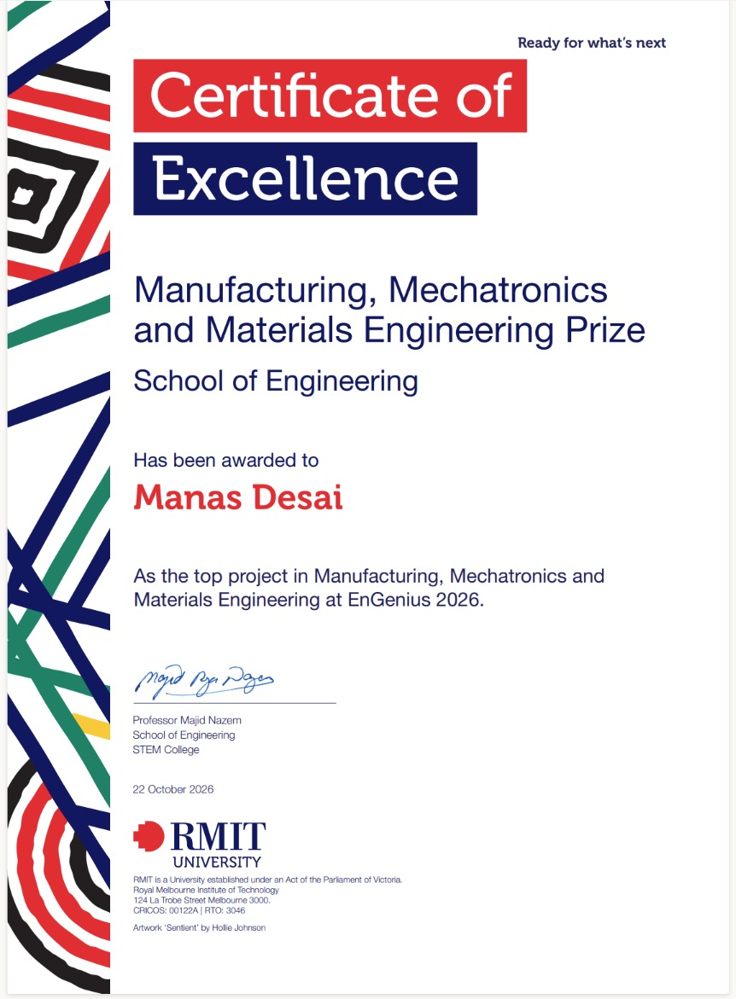
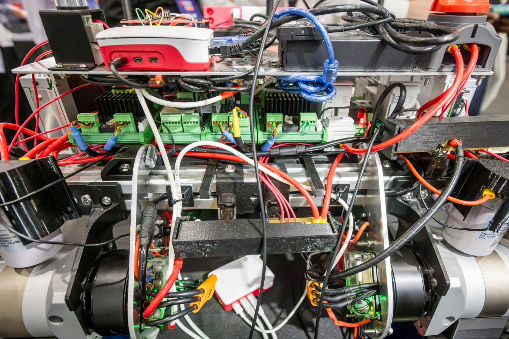
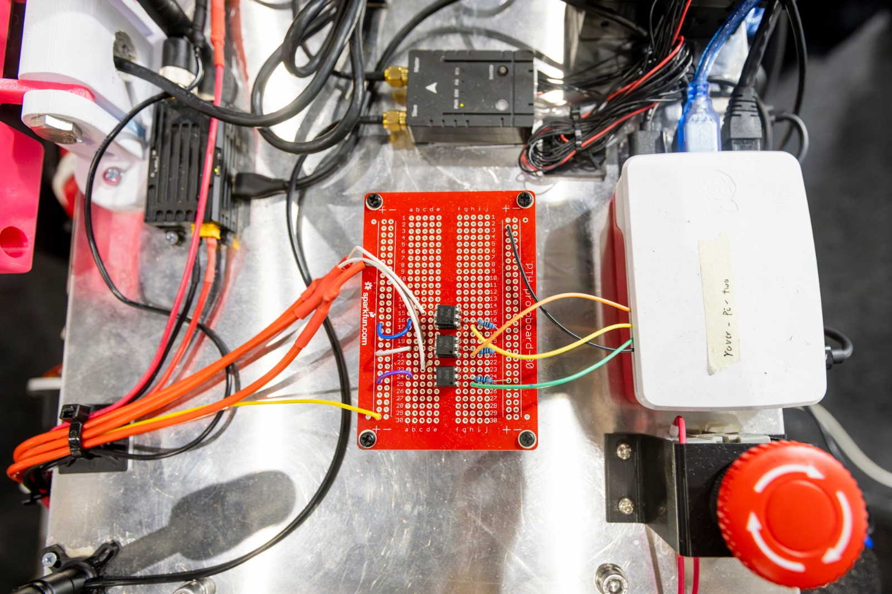
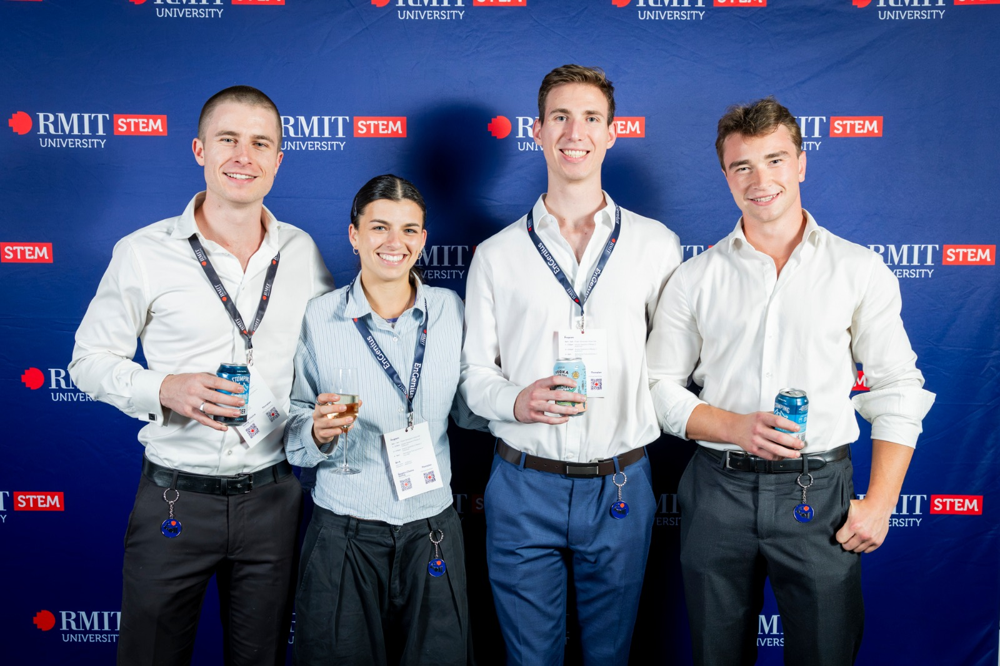
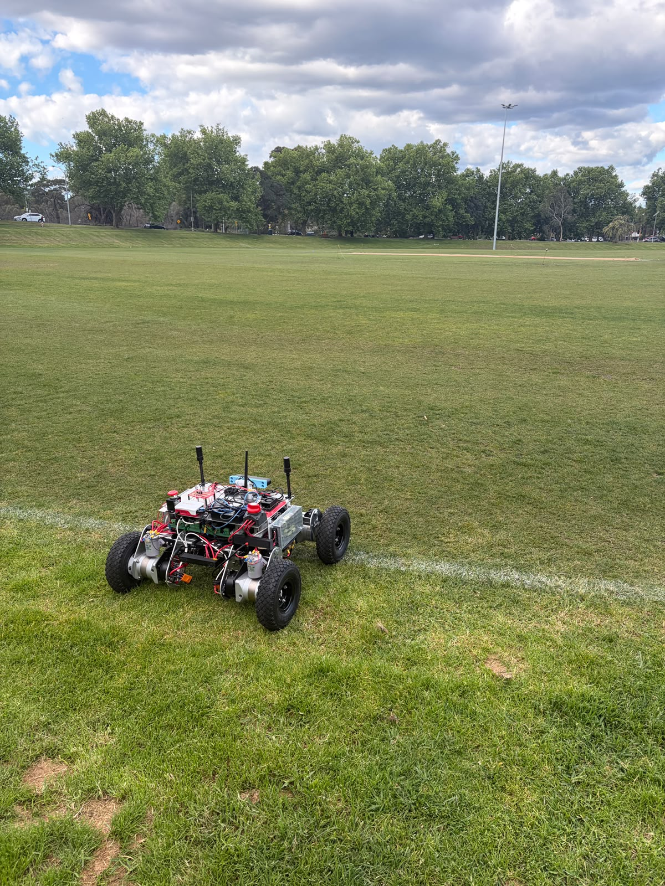

Knuckey Autonomous Rover
Developing and validating a ROS 2-based navigation system through simulation, sensor integration and collaborative hardware development.
Project overview
A collaborative RMIT capstone project investigating autonomous navigation for an agricultural rover. The work brought together robotics software, simulation, sensing, localization, and integration with a physical robotic platform.
My areas of contribution
Simulation and robotics software
Worked on ROS 2 integration and simulation workflows in Gazebo and NVIDIA Isaac Sim, including robot motion, interfaces, and coordinate-frame debugging.
Localization and navigation
Worked with GPS, IMU, and odometry inputs, EKF-based localization, and Nav2 waypoint navigation in simulated agricultural environments.
Testing and validation
Investigated navigation behaviour, integration issues, and simulation results to identify limitations and guide further refinement.
Documented simulation result
This is a simulation result, not a claim of equivalent real-world navigation performance.
EnGenius 2026 recognition

Manufacturing, Mechatronics and Materials Engineering Prize
Recognised at RMIT EnGenius 2026 on 22 October 2026. This award celebrates the team project; the engineering work was collaborative.
Project photo gallery










Project code and collaboration
The rover was developed by a team. See the shared EmuBotMk1 repository for the broader codebase; individual contributions should be attributed to their respective authors.